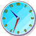

Survey Questions
How to make a good Questionnaire!
|
The first question is one you should ask yourself: "What do I hope to learn from asking the questions?"
|
Example: you want to clean up the local river. You feel that with some help and some money you could make it really beautiful again.
You want to survey your local community to find out:
- Are other people also worried about the river.
- Are they willing to donate their time or money to help.
Questions
Now you know why you are doing a survey, start writing down the questions you will ask!
Just write down any questions you think may be useful. Don't worry about quality at this stage, we will improve your list of questions later.
Example: Questions you could ask for the river survey:
- Does pollution worry you?
- Do you ever go down to the river?
- Can you spare some money to help the river?
- Have you noticed the pollution in the river?
- Are you happy to volunteer for river cleanup?
- When would you be available to help?
- How should we clean up the river?
- etc...
You can also ask the person about themselves (not too personal!), such as age group, male or female, etc, so that you know the kind of people that you have been surveying.
Your Turn: Go ahead and write down the questions for your own survey!
Types of Questions
A survey question can be:
- Open-ended (the person can answer in any way they want), or
- Closed-ended (the person chooses from one of several options)
Closed ended questions are much easier to total up later on, but may stop people giving an answer they really want.
Example: "What is your favorite color?"
Open-ended: Someone may answer "dark fuchsia", in which case you will need to have a category "dark fuchsia" in your results.
Closed-ended: With a choice of only 12 colors your work is easier, but they may not be able to pick their exact favorite color.
Look at each of your questions and decide if they should be open-ended or closed ended (take the opportunity to rewrite any questions, too)
Example: "What do you think is the best way to clean up the river?"
Make it Open-ended: the answers won't be easy to put in a table or graph, but you may get some good ideas, and there may be some good quotes for your report.
Example: "How often do you visit the river?"
Make it Closed-ended with the following options:
- Nearly every day
- At least 5 times a year
- 1 to 4 times a year
- Almost never
You can present this data in a neat bar graph.
Question Sequence
It is important that the questions don't "lead" people to the answer
Example: people may say "yes" to donate money if you ask the questions this way
- Do you love nature?
- Will you donate money to help the river?
But probably will say "no" if you ask the questions this way:
- Is lack of money a problem for you?
- Will you donate money to help the river?
To avoid this kind of thing, try to have your questions go:
- from the least sensitive to the most sensitive
- from the more general to the more specific
- from questions about facts to questions about opinions
Go through your questions and put them in the best sequence possible
Example: I will ask people how often they visit the river (a fact) before I ask them what they feel about pollution (an opinion)
I will ask people their general feelings about the environment before I ask them their feelings about the river.
Neutral QuestionsYour questions should also be neutral ... allowing the person to think their own thoughts about the question.
|
The question "Do you love nature?" (in the example above) is a bad question as it almost forces the person to say "Yes, of course."
Try changing the words to be more neutral, for example:
Example: "How important is the natural environment to you?"
- Not Important
- Some Importance
- Very Important
But you can also make statements and see if people agree:
Make sure each question is neutral.
Possible Answers
For each "closed-ended" question try to think:
What are the possible answers to this question?

Make sure you have most of the common answer available.
If you are not sure what people might answer, you could always try a small open ended survey (maybe ask your friends or people in the street) to find common answers.
Trick: try to avoid neutral answers (such as "don't care") because people may choose them so they don't have to think about the answer!
It is also helpful to have an “other” category in case none of the choices are satisfactory for the person answering the question.
Example: What is your favorite color?
Red, blue, green, yellow, purple, black, brown, orange, other
• Scaled Answers
Sometimes you could have a scale on which they can rate their feelings about the question.
Have "opposite" words at either end and a scale in between like this:
Examples:
The river is ...
Polluted :_____:_____:_____:_____:_____: Clean
Cleaning up the river is ...
Easy :_____:_____:_____:_____:_____: Difficult
• Rated Items
For this type of answer the person gets to rate or rank each option.
Don't have too many items though, as that makes it too hard to answer.
Example: Please rank the following activities from 1 to 5, putting 1 next to your favorite through to 5 for your least favorite.
- ___ Fishing
- ___ Football
- ___ Golf
- ___ Shopping
- ___ Sleeping
• Number Answers
You can also just ask for a number
Example: "How many times did you visit the river during the past year?"
____ times
Look at each "closed-end" question and choose the best answer options.
 |
How Will I Gather the Answers?
|
The QuestionnaireYou will want a neat form that makes it easy to answer the questions AND easy to total up the answers later on. |
Type your questions and answer options into a word processor or spreadsheet, and format it neatly.
Remember to leave plenty of space for open-ended questions.
How Will I Show the Results?
Go over each of the questions and think how you want the answers to go into your report:
- in a table,
- a bar graph,
- a pie chart,
- a dot plot,
- or just explained in words.
Make sure each question is set up so you can present the answers in your chosen style.
Example: you decide to have six options for "How many times do you visit the river" so the bar graph looks best.
The Data Graphs (Bar, Line, Dot, Pie) tool can help.
Test It Out
You should test your questionnaire on a few people.
- was each question clear and easy to understand?
- were they happy with the options?
| It is also a good idea to time how long it takes so you can tell people "this survey only takes __ minutes" (put in your time). Use the Stopwatch. |  |
Try the questionnaire on some friends. Take notes of any difficulties your friends have with the questionnaire, and see what you can do to improve it.
Your Original Objective
Lastly, look back at your original objectives for this survey ...
- will the questions really help you find out what you want to know?
- are there some questions you can remove? (smaller surveys are easier!)
This is your last chance to make sure your questionnaire is a good one!
You Are Done!
Now you have your questions as perfect as you can get them ...
... go out and ask them!